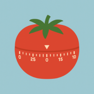

Pomodoro & Adaptativo
Alterne entre blocos clássicos cronometrados ou cronômetro progressivo com pausa sem encerrar para sessões longas de Deep Work.

Foco HeroCombine ciclos Pomodoro ou cronômetro Adaptativo com sons gerados localmente no navegador, missões diárias, painel analítico e 16 temas animados — tudo rodando direto no seu dispositivo, mesmo sem internet.
Interface estável dentro de um único card com 5 abas rápidas (Foco, Painel, Loja, Ajustes e Ajuda).
Alterne entre blocos clássicos cronometrados ou cronômetro progressivo com pausa sem encerrar para sessões longas de Deep Work.
Avisos de fim de sessão, missões concluídas, conquistas e nível aparecem no próprio visor do timer, sem janelas sobrepondo a tela.
Adicione estimativas, reordene prioridades, edite rapidamente com duplo-clique e registre interrupções internas e externas.
Ganhe XP e moedas proporcionais ao tempo focado, complete missões diárias e secretas, destrave 17 conquistas e use Escudos de Sequência.
Acompanhe seu gráfico semanal de 7 dias, histórico diário e taxa de foco com virada de dia automática mantendo tarefas pendentes.
Oculte distrações em um clique e ative a opção para impedir que a tela do celular apague durante a sessão de foco.
Combine camadas sonoras sintetizadas offline via Web Audio API ou envie seus próprios arquivos de áudio salvos no IndexedDB.
Personalize completamente o ambiente visual com paletas gratuitas de todos os estados brasileiros e coleções exclusivas na Loja.
No Chrome ou Edge, clique no ícone de instalar na barra de endereços. No iPhone (Safari), toque em Compartilhar e escolha "Adicionar à Tela de Início". Seus dados ficam salvos no aparelho e podem ser exportados em JSON a qualquer momento.